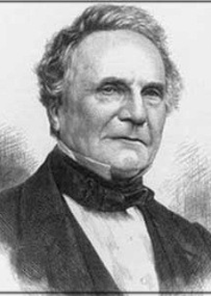

Charles Babbage
Naturalidade: Inglaterra
Nascimento: 26/12/1791
Fama: Babbage foi um cientista, matemático, filósofo, engenheiro mecânico e inventor inglês que originou o conceito de um computador programável junto à Condessa de Lovelace, Augusta Ada King. Charles Babbage é mais conhecido e, de certa forma, referenciado como o inventor que projetou o primeiro computador de uso geral, utilizando apenas partes mecânicas, a máquina analítica. Ele é considerado o pioneiro. Seu invento, porém, exigia técnicas bastante avançadas e caras na época, e nunca foi construído. Sua invenção também não era conhecida dos criadores do computador moderno.